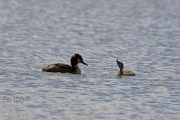

Home
About the Friends
History of the site
Wildlife at Straws Bridge
Latest Wildlife Sightings
News and Events
Activity Pages
Gallery
Can You Help?
Directions
Next Meeting Date
Links to other websites
Recent Photos


Recent sightings by Rod Haycock

Dragonfly

Jay

Koi Carp
A recent sighting of a rare visitor - a Mandarin Duck.
 |
||
|
Photograph
By Rod Haycock |
Photograph
By Kevin Thomas |
Photograph |
 |
 |
Great Crested Grebe catching a fish and passing it to its youngster. Photographs by Graeme Beaumont.
 |
 |
|
|
Common Sandpiper
By Paul Shaw |
Grebe and chick
By Paul Shaw |
Painting by Al Marshall
|
Had an early morning stroll down to Straw's Bridge this morning (7 May, 2012). All was quiet on the main lake. The Canada Geese and Mute Swans were feeding and a few Mallards had chicks that were doing the same. No sign of the Common Sandpiper that had been reported a few days since. There were a couple of Tufted Ducks and a lone Great Crested Grebe. The Coot is still on the nest near the car park bless it! Plenty of Hirundines in the form of Swallows and house Martins were scudding over the water searching for flying insects to feed on. Some were collecting mud for nest building. In the meadow to the side of the lake a few Cowslips and Chickweed are emerging as are the first signs of Ragged robin and field vetches. As I left Straw's a single Common Tern flew over. Moving through to the rear ponds there was Blackcap calling and a few Coots on the water. Climbing the dam towards Peewit Carr the sound of Sedge Warblers singing came to the fore. There were Blackcap calling in Peewit Carr itself and more Cowslips emerging here too along with a wonderful little flock of Long Tailed Tits. On Manners there was the usual collection of Coots, Moorhens, Tufted Ducks, Mute Swans and Great Crested Grebe. The Grebes have two chicks and the parents are carrying them on their backs at present. Heard Dunnock, Blackbird, Song Thrush, Chaffinch and Blue Tit on the way back to Straw's Bridge.All in all not a bad morning.
Photographs and article by Paul Shaw
Sightings by Paul Shaw and George Kitchen. 16 April, 2012 Moorhen. Coot (with chicks). Canada goose. Mute Swan. Tufted Duck. Mallard. Great Crested Grebe (on nest with eggs). Tree Sparrow. Long Tailed Tit. Great Tit. Blue Tit. Blackbird. Song Thrush. Jay. Magpie. Crow. Jackdaw. Wood Pigeon. Robin. Swallow. House Martin. Skylark. Chaffinch. Chiffchaff. Grey Heron. Black Headed Gull. Fox.
 |
 |
|
|
Fox
|
Greater Spotted Woodpecker
|
Grey Heron
|
 |
Photographs by Paul Shaw
|
|
|
Mute Swan
|
Swallow
|
Recent Sightings by George Kitchen, March 2012.
Large Lake
2 Wren, Chaffinch, 9 Tufted Ducks, 1 Dunnock, 2 Coot, 18 Swans, 15 mallards, 6 Canada Geese, 6 Crows, 1 Cormorant, 2 Robins, 6 Wood Pidgeon, 2 Goldfinch, 1 Reed Bunting, 2 Pied Wagtails, 1 Black Headed Gull.
2 Small Lakes
1 Blackbird, 1 Great Tit, 1 Blue Tit, 3 Coot, 1 Greenfinch, 4 Wood Pidgeons, 1 Swan, 10 Goldfinches.
Not strictly wildlife, I know but an unusual sighting, nevertheless!
Esther Collington
March 11 2012 - Latest Sightings by Paul Shaw
Well what a day! We're off to Northumberland in May and if the weather is anything like it was today we'll be happy. Anyway, decided to shuffle of to Straw's Bridge early doors and see what was around. The mega highlight was an Otter on the bigger of the ponds behind Straw's. Only saw it surface once and then it disappeared. A search revealed no prints or any spraint so I assume it was moving along the Nutbrook (they've been seen on here before) and diverted off the check the ponds. Top start to the day.
If you go to Straw's you'll notice a raft of straw in the middle of the lake and some cages to the left.The straw is Barley and it's to stop the spread of blue-green algae. The cages are to protect new planting of marginal aquatic plants to make the area more diverse. The car parks having a make-over too. A big thanks to all from the friends group who helped yesterday and apologies for my absence.Anyway, back to today. Caught my first Meadow Pipet of the year over Manner floods and Blackcap singing at Straw's. Lots of other birds around.
Straw's Bridge
Please Like Our Facebook Page To Keep Up To Date With Events, News And Developments
Take a look at our events page for more information